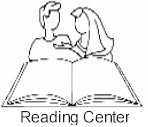

 |
A Service of Learning Assistance |
Faculty | Courses | Tutors | Hours | Testing | Tutor
Training | Other Website Links | LAL
Programs
College
Skills Seminar | English Department Homepage
| Learning
Strategies Module | Learning Characteristics
Scale
| Mission Statement | The Mission of the Ricks College Reading Center is to: 1. Provide placement, diagnostic testing, and advising. 2. Improve basic reading skills through individual tutoring. 3. Teach college reading skills and learning strategies through classes and individual tutoring. 4. Maintain an environment where students feel comfortable acquiring and practicing college reading skills and strategies. 5. Train college reading tutors. 6. Support the Ricks College Faculty and Administration. |
| Overview | The Reading Center helps students with basic reading skills and skills to study college textbooks. Each student receives individual diagnosis, advising, and specific instruction. Most instruction is one-on-one with a tutor, supplemented by small group meetings and regular class work. Students may choose to register for credit or to work without credit. |
| Skills | Some of the topics for study are phonics, vocabulary,
comprehension, grammar, critical thinking, reading rate, and learning strategies. Reading
classes are listed under English in the catalog. |
| Reading Center Courses | English 100, Reading Comprehension: emphasizes
essential skills, i.e. phonics, vocabulary, comprehension, and fluency in oral reading.
2..0 credits. English 101, Reading and Learning Skills - An individual tutorial for college textbook reading skills, i.e. vocabulary, rate, grammar, spelling, and learning strategies (marking, flashcards, textbook notetaking, mapping, and summarizing). .5 - 4 (Repeatable credit, may be taken subsequent semesters, 4.0 credits maximum). English 107, College Reading: emphasizes the reading skills necessary to learn from college textbooks in the natural sciences, social sciences, humanities, and religion. English 108, English Language Development - Oral: emphasizes improving speaking, listening, reading, and writing skills of non-native English speaking students with an emphasis on the oral. English 109, English Language Development - Written: a course for non-native speakers
of English to help improve college-level English capabilities with an emphasis on oral as
well as written discourses. |
| Contacts | Karen C.
Holt Phone (208) 356-1158 email holtk@ricks.edu Greg Hazard
|
| Reading Center Hours | Monday & Friday 8:00 a.m. - 6:00 p.m. Tuesday - Thursday 8:00 a.m. - 9:00 Friday 10:00-3:00 p.m. |